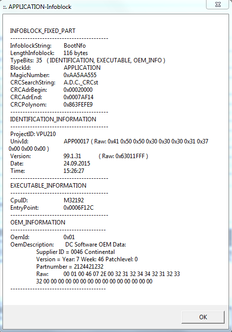

Di 07.06.2016 13:29
- VPU2: 1606071327_VPU2_CG_OUT_VW_ver73492_build445
- Botschaften CANSendID100h, CANSendID140h, CANSendID142h, CANSendID148h werden nicht mehr gesendet
- bisher für VPU2
Mi 30.09.2015 09:59

Bis zum Mi 30.09.2015 09:59:

Mi 01.07.2015 17:36 geflascht
VPU4: CG_IQF APP00382 vom 01.07.2015 10:03:16
Bis zum Mi 01.07.2015 17:35
VPU4: CG_IQF APP00380 vom 26.03.2015 11:23:54
VPU2: CG_OUT APP00411 vom 27.03.2015 12:41:43